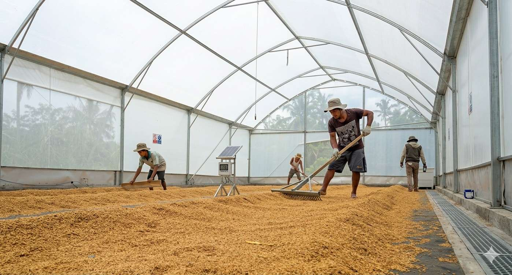
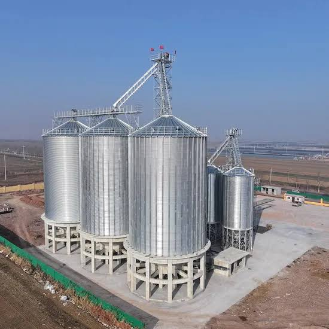
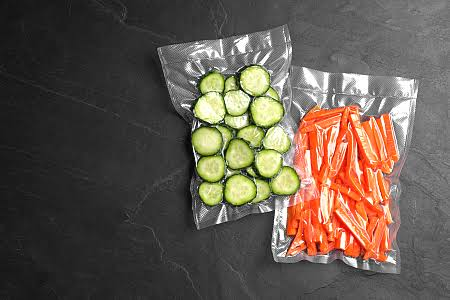
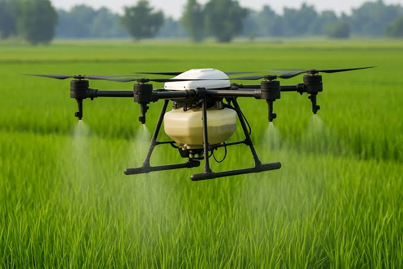
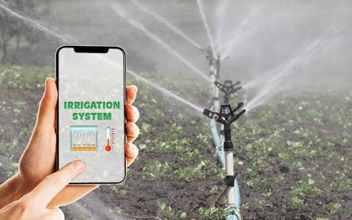
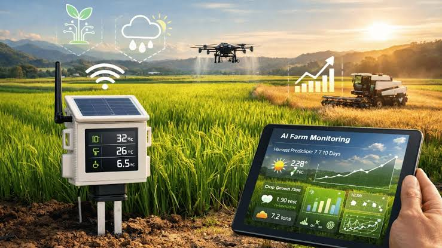

Selamat Datang di Go Tani Nusantara
Solusi cerdas petani modern: harga pasar, cuaca akurat, tanya AI, dan teknologi terkini.
Tanya Go TaniInformasi Harga Pasar (per kg)
Data simulasi terkini untuk cabai, bawang, tomat, beras, jagung.
| Komoditas | Harga (Rp) | Perubahan |
|---|
Data hanya contoh edukasi bagi petani.
Tanya Go Tani (AI Bertani)
Tanyakan hama, pupuk, tanaman, cuaca, atau teknologi pertanian.
Prakiraan Cuaca & Iklim
Masukkan kota dan klik cek cuaca.
Kalkulator Analisis Usaha Tani
Masukkan biaya dan target produksi, dapatkan BEP, harga minimum, dan estimasi keuntungan.
Berita Pertanian Terbaru
Teknologi Pasca Panen & Inovasi Terkini

Pengeringan Modern
Mesin pengering tenaga surya + rumah plastik, turunkan kadar air cepat, hasil panen lebih awet.

Penyimpanan Silo
Silo kedap udara, kontrol suhu & kelembapan, bebas hama. Cocok untuk beras dan jagung.

Pengemasan Vakum
Kemasan vakum menjaga kesegaran sayur & buah, memperpanjang umur simpan hingga 2x lipat.

Drone Pertanian
Pemetaan lahan, penyemprotan presisi, dan pemantauan tanaman dari udara.

Irigasi Pintar
Sistem irigasi otomatis berbasis sensor kelembaban tanah, hemat air hingga 60%.

Sensor Tanah IoT
Sensor pH, NPK, dan kelembaban realtime, rekomendasi pemupukan tepat guna.